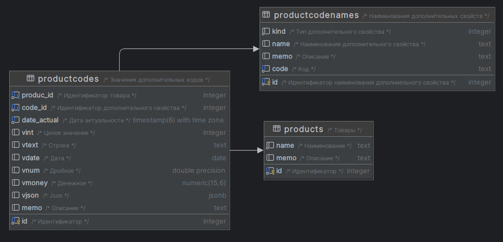

Данная модель позволяет сделать дополнительный свойства основного объекта зависимыми от времени, что позволяет хранить историю изменения значений дополнительных свойств и соответственно получать необходимый резаультат на нужную дату.

Таблицы
products - товары
productcodenames - наименования дополнительных свойств (атрибутов)
productcodes - значения дополнительных свойств (атрибутов)
Скрипты создания таблиц и первоначальное заполнения данными
create table public.productcodes (
id integer primary key not null, -- Идентификатор
produc_id integer not null, -- Идентификатор товара
code_id integer not null, -- Идентификатор дополнительного свойства
date_actual timestamp(6) with time zone not null default now(), -- Дата актуальности
vint integer, -- Целое значение
vtext text, -- Строка
vdate date, -- Дата
vnum double precision, -- Дробное
vmoney numeric(15,6), -- Денежное
vjson jsonb, -- Json
memo text, -- Описание
foreign key (code_id) references public.productcodenames (id)
match simple on update no action on delete no action,
foreign key (produc_id) references public.products (id)
match simple on update no action on delete no action
);
create unique index ix_productcodes_guard on productcodes using btree (produc_id, code_id, date_actual);
comment on table public.productcodes is 'Значения дополнительных кодов';
comment on column public.productcodes.id is 'Идентификатор';
comment on column public.productcodes.produc_id is 'Идентификатор товара';
comment on column public.productcodes.code_id is 'Идентификатор дополнительного свойства';
comment on column public.productcodes.date_actual is 'Дата актуальности';
comment on column public.productcodes.vint is 'Целое значение';
comment on column public.productcodes.vtext is 'Строка';
comment on column public.productcodes.vdate is 'Дата';
comment on column public.productcodes.vnum is 'Дробное';
comment on column public.productcodes.vmoney is 'Денежное';
comment on column public.productcodes.vjson is 'Json';
comment on column public.productcodes.memo is 'Описание';
Примеры запросов получения данных
Данные о истории дополнительного одного дополнительного свойства
select p.id as product_id, p.name as produc_name,
pv.code_id, pn.name as pname, pv.date_actual::date, pv.vint
from public.products p
inner join public.productcodes pv on p.id = pv.produc_id and pv.code_id=1
inner join public.productcodenames pn on pv.code_id = pn.id
where p.id=1 order by pv.date_actual desc;
Результат:
product_id
produc_name
code_id
pname
date_actual
vint
1
product 1
1
int value
2024-05-03
14
1
product 1
1
int value
2024-05-02
13
1
product 1
1
int value
2024-05-01
12
1
product 1
1
int value
2024-04-30
11
Максимальная дата для указанного дополнительного свойства
with maxtd as (select max(date_actual) as lastdt from public.productcodes where produc_id=1 and code_id=1)
select lastdt from maxtd;
Актуальное на максимальную дата значение дополнительного свойства
with maxtd as
(select produc_id, code_id, max(date_actual) as lastdt
from public.productcodes
where produc_id=1
group by produc_id, code_id
)
select p.*, pc.code_id, pc.date_actual, pc.vint
from
products p left join
public.productcodes pc on p.id = pc.produc_id
inner join maxtd on pc.code_id=maxtd.code_id and pc.produc_id=maxtd.produc_id
where pc.produc_id=1 and pc.code_id=1 and pc.date_actual = maxtd.lastdt;
Значения всех дополнительных свойств для одного объекта
with maxtd as
(select produc_id, code_id, max(date_actual) as lastdt
from public.productcodes
where produc_id=1
group by produc_id, code_id
),
maxtid as
(select cn2.id, cn2.code_id from maxtd inner join public.productcodes cn2 on
cn2.date_actual=maxtd.lastdt
and cn2.produc_id=maxtd.produc_id
and cn2.code_id = maxtd.code_id
)
select coalesce(pc.produc_id, 1) as product_id, cn.kind, cn.name as codename, cn.code,
pc.id as propid, coalesce(pc.code_id, cn.id) as code_id ,pc.date_actual,
pc.vint, pc.vtext, pc.vdate, pc.vnum,
pc.vmoney, pc.vjson, pc.memo as propmemo
from
public.productcodenames cn
left join maxtid on cn.id=maxtid.code_id
left join public.productcodes pc on maxtid.id=pc.id;